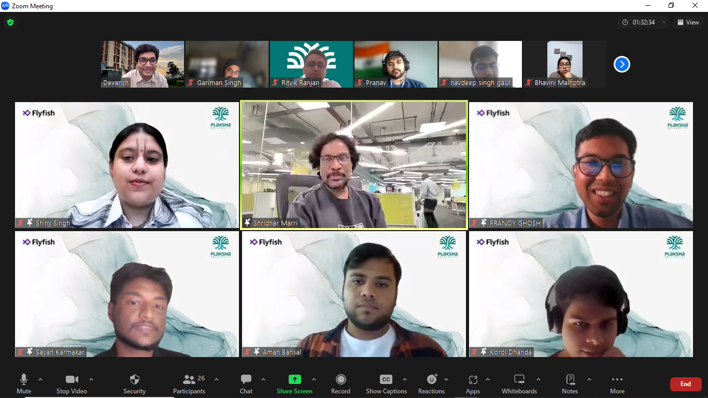

By the grace of "Prof. Dwight's Foundation-of-Leadership" I got to discover who I am and who I want to be. Through a scientific process I learnt my many strengths and some weakness and this self-discovery will always allow me to fit in better within a team.
Also I am thankful to the many mentorship sessions as I interacted with people at CXO levels, I could sneek-peek into the kind of self-discipline required to be in a position of responsibility. I realized that I had every wrong glorified ideas about entrepreneurs & why to become one - they're never boss and they're not free birds! I am especially indebted to Mr. Shridhar Marri, Mr. Jochen Jaser and Mrs Jaya Hangal interacting with them taught me :
all the 3 bad reasons to be entrepreurs and all the right reasons, whether to do a job or venture into entrepreneurship, whom to be cofounders with, how to grow in one's career in MNC starting from entry to mid level and beyond, how career growth in MNCs vs startups look like and to chase "work-life integrity" instead of popular idea "work-life balance" etc etc.

Content for topic 2...
Content for topic 3...
ACCELAI building customer loyalty for Medium sized Retail Chains :
not another Enterprise resource planner or Customer relationship management system.